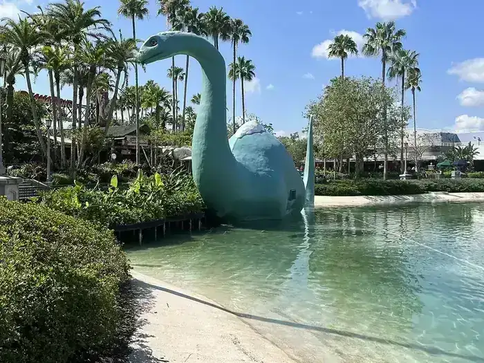
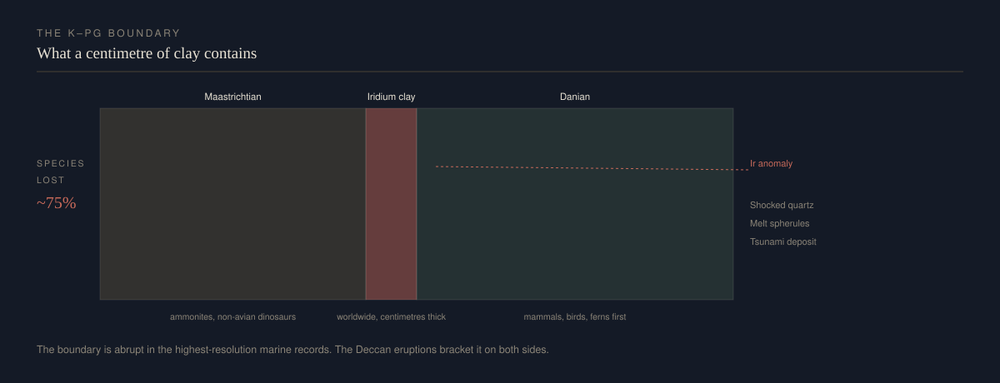

The anomaly
In 1980, Luis and Walter Alvarez and colleagues reported that a thin clay layer at the Cretaceous–Palaeogene boundary at Gubbio, Italy, contained iridium at concentrations tens of times the normal crustal value. Iridium is rare on Earth's surface and common in meteorites. The same layer, with the same enrichment, was found in Denmark and New Zealand.
Maps, diagrams and images



Their proposal — a 10-kilometre asteroid — was resisted for a decade, partly because no crater of the right age was known. In 1991 the Chicxulub structure under the Yucatán was identified as a buried impact crater about 180 kilometres across, dated to the boundary.
What the crater confirms
The impact hypothesis makes predictions that a volcano hypothesis does not: shocked quartz, melt spherules, a worldwide ejecta layer, a tsunami deposit around the Gulf, and an iridium anomaly that decays with distance from the crater. All are present. A 2010 review of 20 years of evidence concluded the impact was the cause of the extinction.
The Deccan Traps
The other candidate is the Deccan Traps flood volcanism in India, which erupted around the same time and would have released sulphur and carbon dioxide over hundreds of thousands of years. The eruptions began before the impact and continued after it. High-precision dating suggests the fastest eruption rates came after the boundary, which weakens the claim that volcanism alone caused the extinction — and strengthens the idea that the impact may have accelerated the eruptions.
Documented: a large impact at 66.0 Ma, the Chicxulub crater, and a mass extinction at the same boundary. The coincidence is not in doubt.
Documented: the Deccan eruptions also happened, and contributed environmental stress before and after.
Still argued: the relative contribution of each, and whether the Deccan eruptions alone would have caused a mass extinction.
Settled against: the claim that the extinction was gradual and the impact irrelevant. The boundary is abrupt in the highest-resolution marine records.
What died, and what did not
Every non-avian dinosaur, the marine reptiles, the ammonites, most planktonic foraminifera. Birds, mammals, crocodilians, turtles and frogs survived. Size and food chain position predicted survival better than anything else: large terrestrial animals and animals dependent on photosynthesis at the base of the food web went first, which is what a months-long shutdown of sunlight produces.
Why it matters here
Because it is the archive's cleanest case of a catastrophic claim that was mocked and then confirmed by a crater, and because the public argument — volcanoes or asteroid — is now a technical argument about dates rather than a fight about whether the evidence exists.
Sources for this page
- Wikipedia, “Cretaceous–Paleogene extinction event” — evidence and debateen.wikipedia.org
- Alvarez et al. (1980), Science — the iridium anomaly paperdoi.org
- Schulte et al. (2010), Science — the 20-year review of the impact hypothesisdoi.org
- Wikipedia, “Chicxulub crater” — discovery and structureen.wikipedia.org
Open resources on this topic
- PapersOpen-access articles: DOAJ · PubMed Central · Internet Archive Scholar
- BooksPublic-domain and borrowable copies: Open Library · Project Gutenberg · Google Books · Internet Archive
Cite this page
Momin, S. (2026). The Dinosaur Extinction. The Larger World Archive. https://drsamonline.github.io/LARGE_GLOBE/dinosaur-extinction.htmlMomin, Sohil. “The Dinosaur Extinction.” The Larger World Archive, 2026, https://drsamonline.github.io/LARGE_GLOBE/dinosaur-extinction.html.Momin, Sohil. “The Dinosaur Extinction.” The Larger World Archive, 2026. https://drsamonline.github.io/LARGE_GLOBE/dinosaur-extinction.html.@misc{the2026dinosaur,
author = {Momin, Sohil},
title = {The Dinosaur Extinction},
year = {2026},
howpublished = {The Larger World Archive},
url = {https://drsamonline.github.io/LARGE_GLOBE/dinosaur-extinction.html},
note = {Last reviewed 20 November 2026}
}Last reviewed 20 November 2026 · Corrections policy · this page is not peer reviewed